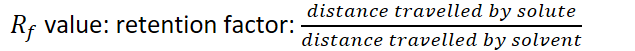
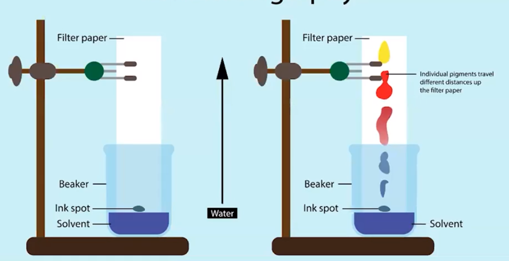
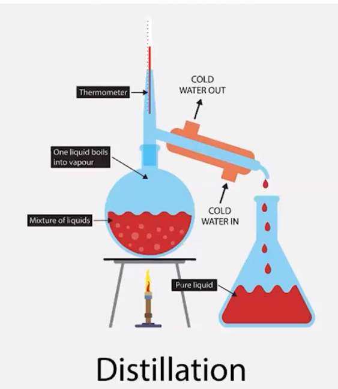

Components in liquid solutions cannot be filtered by filtration
Filtration only separates based on size
Separating solutions must consider difference between intermolecular interactions of components
Chromatography
Separate based on intermolecular attraction
Different intermolecular attractions between/among components of solution (mobile phase) and surface components of paper/column (stationary phase)
Solution ("Mobile Phase") will have different amount of attraction to the paper/column ("Stationary Phase") because of polarity
Solution travels out paper due to capillary action
The more polar a component of the solution
Less polar = more interaction, travels less
{width="6.614583333333333in" height="0.53125in"}
{width="7.114583333333333in" height="3.6458333333333335in"}
Distillation
Separates chemical species based on strength of intermolecular attractions
These intermolecular attractions have effects on vapor pressure of components
Separates based on boiling first
Liquid with lower boiling point boils and gets condensed elsewhere
Liquid with higher boiling point remains in container
Vocabulary:
Distillate - liquid that boils off and condenses
Miscible - able to combine and make a solution
{width="3.90625in" height="4.5in"}